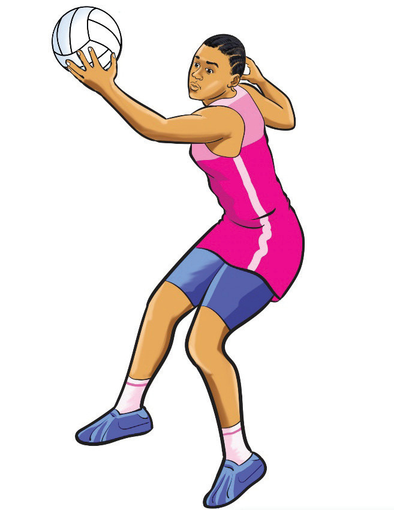

Extend your arm toward the ball, positioning your fingers to form the shape of the ball;
Catch the ball firmly with the palm and fingers of one hand, ensuring a strong grip as the ball makes contact as shown in Figure 1.11; and
Pull the ball back towards your body to secure it, using your other hand to assist.

Movement and footwork
Proper movement and footwork are essential for creating space, maintaining possession, and staying agile on the court. Players must adhere to footwork rules to avoid violations and ensure efficient gameplay. The key footwork techniques include pivoting, dodging, and landing.
Pivoting
Pivoting is the keeping of one foot planted while making a swivel movement that allows the player to move on a fixed axis to either pass or shoot. It opens up space on the court by changing the direction of the game. After receiving the ball, a player can pivot on one foot, allowing them to quickly change direction without losing possession. This technique helps maintain control while setting up for a pass or shot. To practice pivoting, follow these steps: